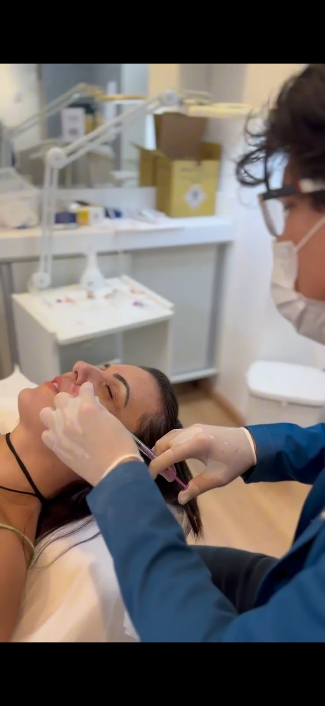

Rejuvenescimento & Facial
Harmonização Facial
Descrição
A harmonização facial reúne diferentes técnicas — como preenchimentos, bioestimuladores e toxina botulínica — combinadas de forma individualizada para equilibrar proporções e contornos do rosto, respeitando a estrutura óssea e a singularidade de cada pessoa.
Principais benefícios
- Equilíbrio entre as regiões do rosto
- Contorno facial mais definido
- Resultado gradual, natural e individualizado
- Planejamento técnico conforme sua anatomia
Para quem é indicado
Indicado para quem deseja equilibrar proporções faciais e suavizar sinais de envelhecimento sem alterar a essência das próprias feições, sempre a partir de um planejamento construído em avaliação individual.
Como funciona
- Avaliação facial completa e mapeamento de proporções
- Elaboração de um plano personalizado, combinando técnicas quando necessário
- Aplicação em etapas, respeitando o tempo de resposta da pele e dos tecidos
- Acompanhamento e ajustes ao longo do protocolo
Os resultados podem variar de pessoa para pessoa. Este conteúdo tem caráter informativo e não substitui uma avaliação clínica individual.
Perguntas frequentes
Quantas sessões são necessárias?
O número de sessões depende do plano definido na avaliação, que pode combinar diferentes técnicas conforme o objetivo.
O procedimento dói?
Utilizamos técnicas com anestésicos tópicos quando indicado, o que reduz significativamente o desconforto durante a aplicação.
O resultado é permanente?
Não. Os efeitos são temporários e sua duração varia conforme a técnica utilizada e as características individuais de cada pessoa.
Sua jornada estética começa com uma conversa.
Agende sua avaliação e conheça o protocolo pensado especialmente para você.
Falar com a Maison